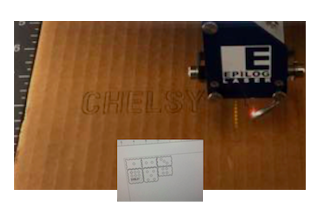
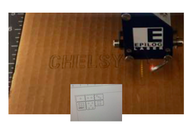

This week, we learned various properties of vector and raster, and the importance of differentiating them. "Vector" was cutting through the object, and "Raster" was engraving.
We created the plan for the figures using the program called 'Coral-Draw'. We made each of our own box unique by adding our own designs.
 

After measuring the dimensions of the cardboard that I was about to use, using a program called Makercase, I previewed what my case was going to look like. Then, using Corel Draw, I put dots and my name for the machine to perform raster and vector. Also, the lines that I wanted to cut should be in “hairline” in order for the machine to start cutting.
MAKING PUZZLES!
After printing out a picture of my drawing using the laser printer, I brought it over to the laser cutter where the pieces were accurately cut. It was really interesting to see how I could make my uniquely designed puzzles in a short time!
I created my own stamp first designing with Corel Draw and printing it out with Epilog Laser Fusion M2. I put my name and the email address under it to add complexity.


I also used Coreldraw to make the design for my own water bottle! I was really excited at the thought of having my own waterbottle. I made the dimensions 13 x 15 and put a pineapple design with my name on it. It was really intriguing to see the machine engraving the different hues on the pineapple!
Although the process did not run smoothly, this was a very interesting and new experience for me as I got to create my own box. I learned that in order to make the box have penetrated parts, I should set each specific part as 'hairline'. Also, it is REALLY important to make sure all the settings in the preferences are set up properly. To actually cut through the cardboard box, I had to increase the speed and the power of the cutter. The same thing applied when making the stamp or the bottle because when the power was too low, it would not engrave properly. Making everyday objects using my own hands was a really new experience for me, and I hope to make these things for my friends and family as well!
Attached below are the original files of my projects.